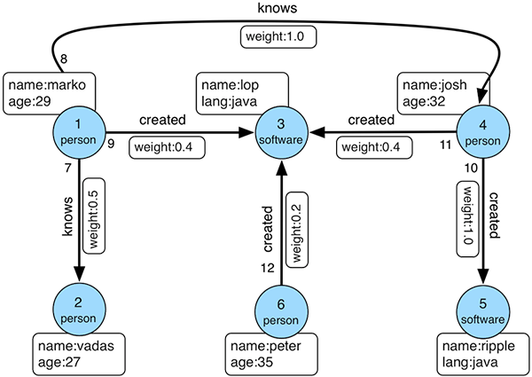

Let’s compare the queries/traversals in the Gremlin Getting Started Tutorial with equivalent Molecule queries.
For the examples we’ll use the same “Modern” graph as the tutorial:

Gremlin is untyped, so data is inserted directly in a generic way where “types” are created on-the-go:
Graph graph = TinkerGraph.open(); (1)
Vertex marko = graph.addVertex(T.label, "person", T.id, 1, "name", "marko", "age", 29); (2)
Vertex vadas = graph.addVertex(T.label, "person", T.id, 2, "name", "vadas", "age", 27);
Vertex lop = graph.addVertex(T.label, "software", T.id, 3, "name", "lop", "lang", "java");
Vertex josh = graph.addVertex(T.label, "person", T.id, 4, "name", "josh", "age", 32);
Vertex ripple = graph.addVertex(T.label, "software", T.id, 5, "name", "ripple", "lang", "java");
Vertex peter = graph.addVertex(T.label, "person", T.id, 6, "name", "peter", "age", 35);
marko.addEdge("knows", vadas, T.id, 7, "weight", 0.5f); (3)
marko.addEdge("knows", josh, T.id, 8, "weight", 1.0f);
marko.addEdge("created", lop, T.id, 9, "weight", 0.4f);
josh.addEdge("created", ripple, T.id, 10, "weight", 1.0f);
josh.addEdge("created", lop, T.id, 11, "weight", 0.4f);
peter.addEdge("created", lop, T.id, 12, "weight", 0.2f);
In Molecule we first define a schema. Since we won’t use the weight properties yet, we’ll start off defining a schema without those:
object ModernGraph1DataModel {
trait Person {
val name = oneString
val age = oneInt
// Normal (uni-directional) reference
val software = many[Software]
// Bidirectional self-reference
val friends = manyBi[Person]
}
trait Software {
val name = oneString
val lang = oneString
}
}
When we compile our project with sbt compile, the sbt-molecule plugin will generate the necessary boilerplate code so that we can enter typed data to populate the graph:
// Create database and save implicit connection
implicit val conn = recreateDbFrom(ModernGraph1Schema)
for {
// Software
List(lop, ripple) <- Software.name.lang insert Seq(
("lop", "java"),
("ripple", "java")
) map(_.eids)
// People and software created
List(marko, vadas, josh, peter) <- Person.name.age.software insert Seq(
("marko", 29, Set(lop)),
("vadas", 27, Set[Long]()),
("josh", 32, Set(lop, ripple)),
("peter", 35, Set(lop))
) map(_.eids)
// Friendships
_ <- Person(marko).friends(vadas, josh).update
} yield ()
We’ll use the variables with entity ids above for the coming examples.
Now we are ready to make queries.
Since Gremlin traverses generic edges and vertices it is also communicating intentions in a generic way like the following “query”:
Get the value of the name property on vertex with the unique identifier of “1”.
gremlin> g.V(1).values('name')
==>marko
Since Molecule uses the domain terms as custom building blocks directly, we can formulate our intentions with the language of our domain directly:
What is the Person name of entity marko?
Person(marko).name.get.map(_.head ==> "marko")
Get the edges with the label “knows” for the vertex with the unique identifier of “1”:
gremlin> g.V(1).outE('knows')
==>e[7][1-knows->2]
==>e[8][1-knows->4]
Marko’s friends
Person(marko).friends.get.map(_.head ==> Set(vadas, josh))
Get the names of the people that the vertex with the unique identifier of “1” “knows”.
gremlin> g.V(1).out('knows').values('name')
==>vadas
==>josh
In Molecule we can jump from one namespace like Person to Friends since there’s a relationship defined between the two. That way we can get Marko’s referenced Friends entities:
Person(marko).Friends.name.get.map(_.head ==> Set("vadas", "josh"))
Note though, that a namespace is not like a SQL table but rather just a meaningful prefix for a group of attributes.
Get the names of the people vertex “1” knows who are over the age of 30.
gremlin> g.V(1).out('knows').has('age', gt(30)).values('name') //(7)
==>josh
Names of Marko’s friends over the age of 30.
Person(marko).Friends.name.age_.>(30).get.map(_ ==> Set("josh"))
Find Marko in the graph
gremlin> g.V().has('name','marko')
==>v[1]
Prepending the generic attribute e before an attribute finds the entity that it belongs to:
Person.e.name_("marko").get.map(_.head ==> marko)
We also append an underscore _ to the name attribute so that it becomes name_. In Molecule this makes the attribute “tacit”, or “silent”, meaning that we don’t need to return its value “marko” since we’re already applying it as a value that we expect the attribute to have.
Gremlin has reached the “software that Marko created”, he has access to the properties of the “software” vertex and you can therefore ask Gremlin to extract the value of the “name” property
gremlin> g.V().has('name','marko').out('created').values('name')
==>lop
What software did Marko create? - here we use a relationship again to get to the referenced Software entities and their names
Person.name_("marko").Software.name.get.map(_ ==> List("lop"))
Find the “age” values of both “vadas” and “marko”
gremlin> g.V().has('name',within('vadas','marko')).values('age')
==>29
==>27
To get both names we us Molecule’s OR-logic by applying multiple values to an attribute. name should be either “marko” OR “vadas” and we can use various syntaxes:
Person.name_("marko", "vadas").age.get.map(_ ==> List(27, 29)) // Vararg
Person.name_("marko" or "vadas").age.get.map(_ ==> List(27, 29)) // `or`
Person.name_(Seq("marko", "vadas")).age.get.map(_ ==> List(27, 29)) // Seq
Average age of “vadas” and “marko”
gremlin> g.V().has('name',within('vadas','marko')).values('age').mean()
==>28.0
Molecule implements Datomics aggregate functions by applying the keyword avg to a number attribute like age
Person.name_("marko", "vadas").age(avg).get.map(_.head ==> 28.0)
“Who are the people that marko develops software with?"
gremlin> g.V().has('name','marko').out('created').in('created').values('name')
==>marko
==>josh
==>peter
It’s idiomatic with Datomic to split such query and use the output of one query as input for the next one:
// First find ids of software projects that marko has participated in
val markoSoftware = Person.name_("marko").software.get.head
// Then find names of persons that have participated in those projects
Person.name.software_(markoSoftware).get.map(_ ==> List("peter", "josh", "marko"))
gremlin> g.V().has('name','marko').as('exclude').out('created').in('created').where(neq('exclude')).values('name')
==>josh
==>peter
Person.name.not("marko").software_(markoSoftware).get.map(_ ==> List("peter", "josh"))
“Group all the vertices in the graph by their vertex label”
gremlin> g.V().group().by(label).by('name')
==>[software:[lop,ripple],person:[marko,vadas,josh,peter]]
Since Molecule is typed we would probably ask for specific name attribute values:
Person.name.get.map(_ ==> List("peter", "vadas", "josh", "marko"))
Software.name.get.map(_ ==> List("ripple", "lop"))
The Gremlin tutorial doesn’t actually use any of the weight properties so we made the Friends2 test suite to see how we can work with edge property molecules.
Let’s ask a few more complex questions - a reminder of the graph could be useful here
Who knows young people?
// Since we save bidirectional references we get friendships in both directions:
Person.name.Friends.name.age.<(30).get.map(_ ==> List(
("vadas", "marko", 29), // vadas knows marko who is 29
("josh", "marko", 29), // josh knows marko who is 29
("marko", "vadas", 27) // marko knows vadas who is 27
))
How many young friends does the older people have?
Person.name.age.>=(30).friends(count).age_.<(30).get.map(_ ==> List(
("josh", 32, 1) // josh (32) knows 1 young person (Marko, 29)
))
Marko’s friends and their friends
Person.name("marko").Knows.Person.name.Knows.Person.name.get.map(_ ==> List(
("marko", "vadas", "peter"),
("marko", "josh", "marko"),
("marko", "vadas", "marko")
))
// Same, nested
Person.name("marko").Knows.*(
Person.name.Knows.*(
Person.name)).get.map(
_.map(t1 => (t1._1, t1._2.map(t2 => (t2._1, t2._2.sorted)).sortBy(_._1))) ==>
List(
(
"marko",
List(
("josh", List("marko")),
("vadas", List("marko", "peter")),
)
)
)
)
Marko’s friends and their friends (excluding marko)
Person.name("marko").Knows.Person.name.Knows.Person.name.not("marko").get.map(_ ==> List(
("marko", "vadas", "peter")
))
Marko’s friends' friends
Person.name_("marko").Knows.Person.Knows.Person.name.not("marko").get.map(_ ==> List(
"peter"
))
Marko’s friends' friends that are not already marko’s friends (or marko)
val ownCircle = Person(marko).Knows.Person.name.get.toSeq :+ "marko"
Person(marko).Knows.Person.Knows.Person.name.not(ownCircle).get.map(_ ==> List(
"peter"
))
Well-known friends
Person(marko).Knows.weight_.>(0.8).Person.name.get.map(_ ==> List("josh"))
Well-known friends heavily involved in projects
Person(marko).Knows.weight_.>(0.8).Person.name.Created.weight_.>(0.8).Software.name.get.map(_ ==> List(
("josh", "ripple")
))
Friends of friends' side projects
Person(marko).Knows.Person.Knows.Person.name.not("marko").Created.weight.<(0.5).Software.name.get
.map(_ ==> List(
("peter", 0.2, "lop")
))
// .. or elaborated:
Person(marko) // marko entity
.Knows.Person // friends of marko
.Knows.Person.name.not("marko") // friends of friends of marko that are not marko
.Created.weight.<(0.5) // Created (software) with a low weight property
.Software.name // name of software created
get.map(_ ==> List((
"peter", // peter is a friend of vadas who is a friend of marko
0.2, // peter participated with a weight of 0.2 in creating
"lop" // the software "lop"
)))